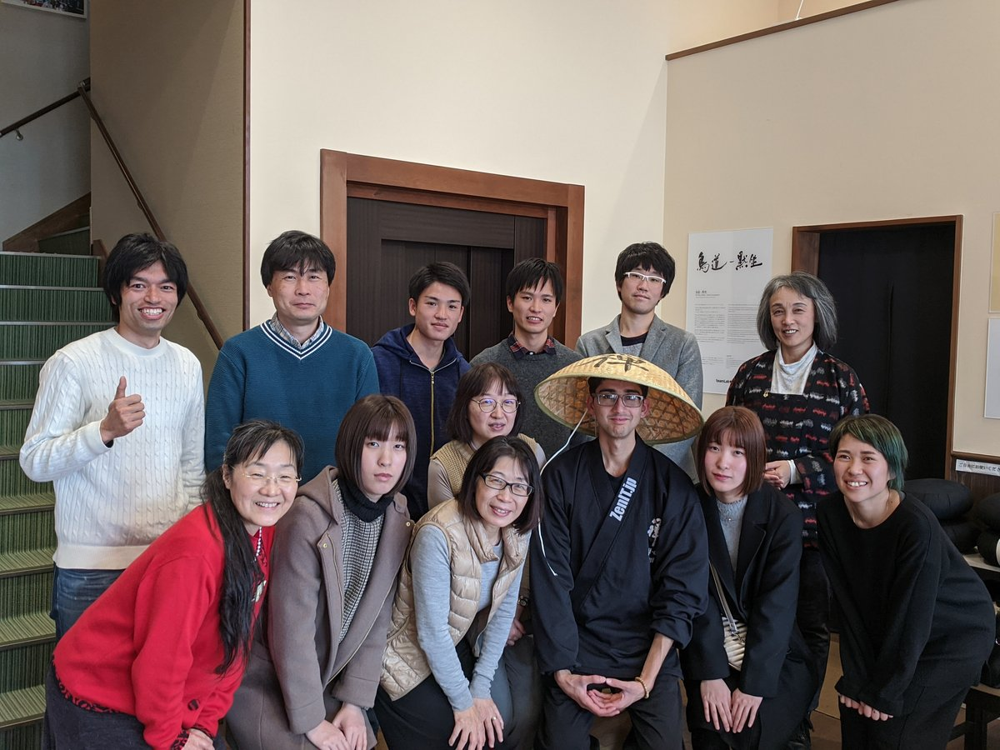
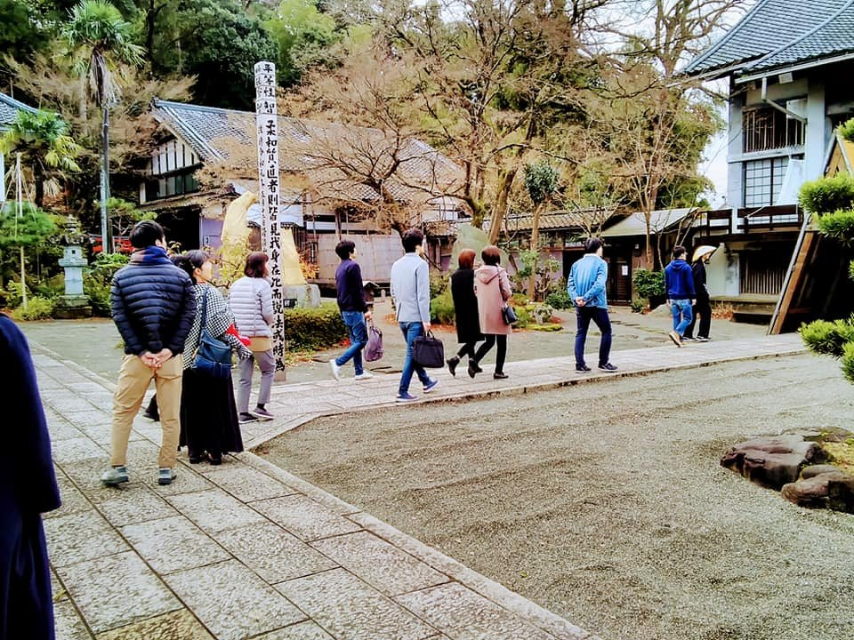
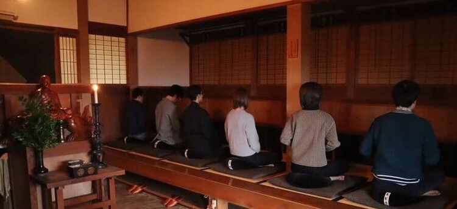
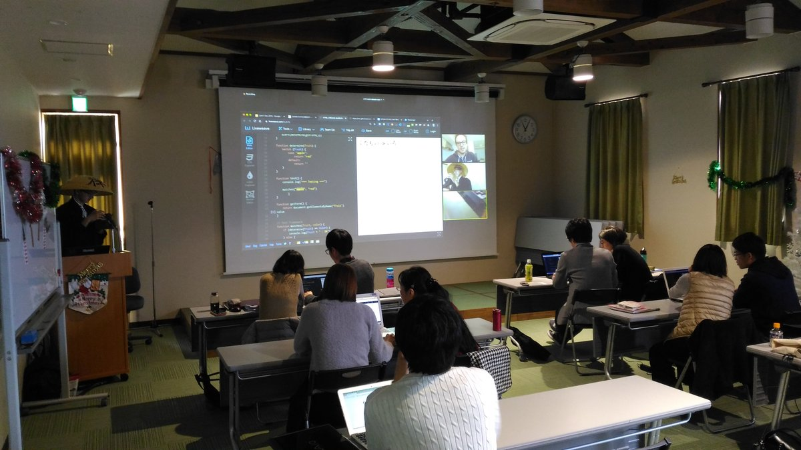
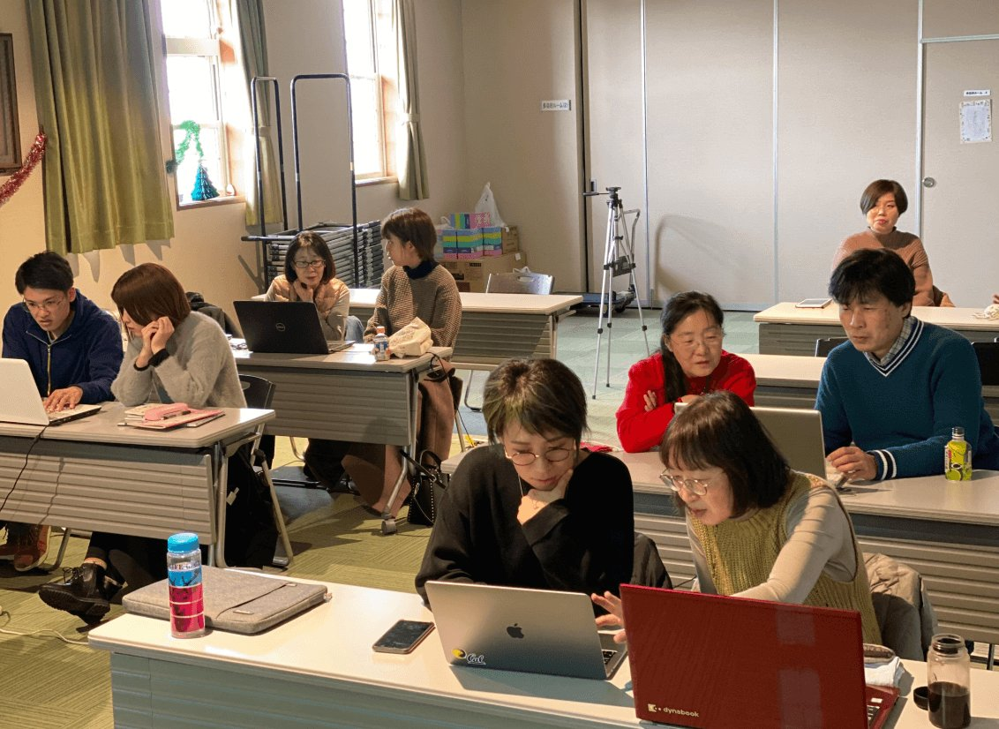
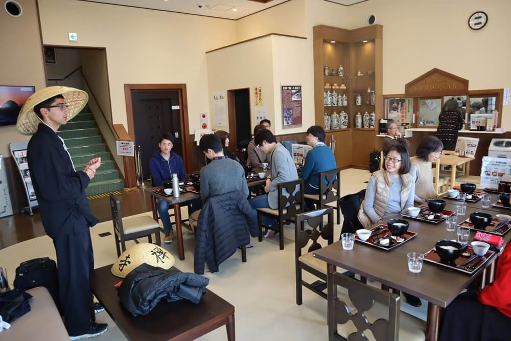
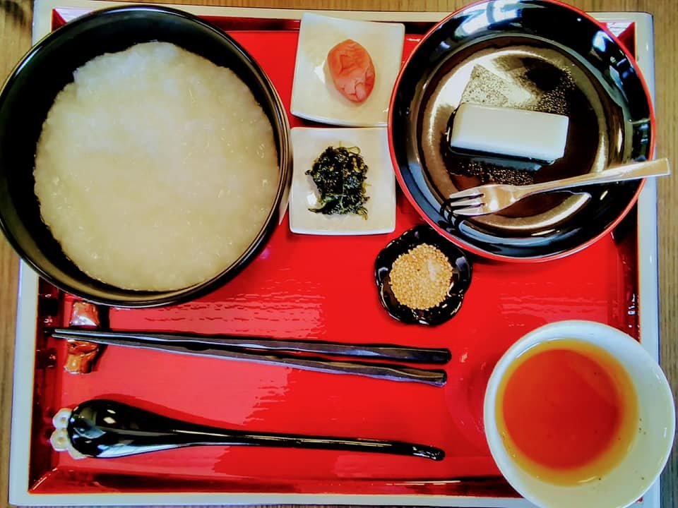
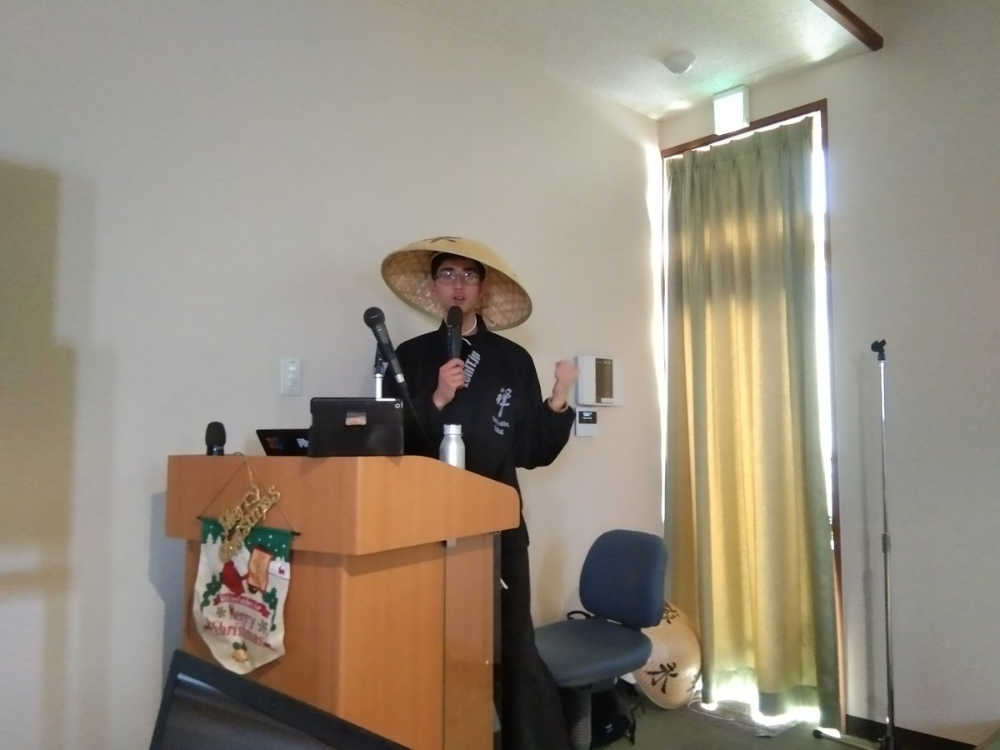

2019/12/15 ZenIT Workshop @ Tenryuuji - Blog Post

当日の参加者 / Participants

天龍寺 / Tenryuuji Temple
今回の禅ITのワークショップは、永平寺町松岡にある曹洞宗の清涼山天龍寺と永平寺町魅力発信交流施設えい坊館で行われました！（イベント詳細ページ）
This time’s ZenIT workshop happened at Tenryuuji, a Zen temple in Eiheiji-Matsuoka town, and Eiboukan, Eiheiji town’s cultural exchange establishment! (Event page)
まずは、みんなで徒歩で天龍寺まで移動して、ご住職からお寺の拝観と坐禅の説明を受けてから、25分間の坐禅をしました。
To start, everyone walked to Tenryuuji, where they were greeted by the head monk who gave them an explanation of Zazen followed by a 25-minute sitting experience.
ご住職から坐禅の説明を受けている参加者 / Participants receiving lecture on Zen

坐禅中の参加者 / Participants performing Zazen
その後はえい坊館に戻って、デザイナーのCanyon氏とプログラマーのあみる氏による、リモートを使用した、ペアワークのプログラミング教室を行いました。初めに、Canyon氏が実際に使用しているPivotal社のペアプログラミングとテスト駆動開発（Test-driven development）の説明をしました。その後は、Canyon氏とあみる氏が生徒さんにLiveweaveを利用して、果物の色を区別する簡単なHTMLとJavaScriptのウェブページの作り方を教えました。多くの生徒さんは全く初心者でしたが、お互いに教えたり学んだりしながらスムーズに進めるために、先輩・後輩のペアを組みました。ペアの交換を何回もすることで、ペアワークの良さも表現できました！
After that, we returned to Eiboukan and started the programming workshop, taught remotely in pair style by Canyon (designer) and Amil (developer). First, Canyon gave an overview of how pair programming and test-driven development is practiced at Pivotal, where both he and Amil work. After that Canyon and Amil walked students through a basic HTML/JavaScript web page for determining the colors of fruits using Liveweave. Most of the students were total beginners to programming, but were assigned into pairs of junior/advanced so that each pair could make progress quickly while teaching each other. We also rotated pairs many times, demonstrating the merits of pair work for speeding up learning, resilience to sudden changes, making friends, and enjoying the work!
もちろん、禅ITワークショップであるので座禅と休憩も混ぜ込み、目標だったJavaScriptのウェブページが完成しました。
Of course, this being a ZenIT workshop, Zazen meditation sessions and breaks were also intertwined, with the goal of the work itself becoming meditation!

リモートで教えているCanyon氏の様子 / Canyon remotely teaching students

ペアワーク中の参加者 / Participants doing pair work
終了後は、えい坊館で動物性は一切入っていない精進料理をいただきました。今回は禅の体験でしたので「無言」でいただきました。日頃の生活では、なかなかできない感謝の気持ちで、瞑想に近い食べ方をしました。
After the event finished, we had a Buddhist vegan meal (Shojin-ryouri) and ate silently (Mugon) as a rare Zen experience, similar to meditation.

食事の風景 / Preparing for lunch

精進料理のお粥 / The vegan Okayu meal
参加者のペア・アンケートからの感想 / Thoughts from a participant survey filled out by a pair
「座禅の後でプログラミングをする体験は新鮮でした。頭も心もすっきりしました。初心者でも楽しめました。また、参加したいです。 初めて座禅をしていい経験になりました。プログラミングも前から気になっていたので知らないことを学べて良かったです。」
“Programming after Zazen was a fresh experience for me; my mind became quite clear. It was quite enjoyable, despite myself being a beginner and I hope to participate again. I had a good experience with this being my first time doing Zazen. Programming was also something I was interested in since before and am glad I could learn something new this time.“
参加者のペア・アンケートからの感想 / Thoughts from a participant survey filled out by a pair
「遠い世界と思っていたプログラミングが身近に感じられた。 始めての座禅体験で精神的な安定の大切さを学ばせて頂いた 。」
“Although the programming world has always seemed mysterious and hard to grasp for me, I felt it closely this time. Having my first Zazen experience, I learned the importance of having a stable mental state.“
イベント宣伝協力 / Parties who helped advertise the event!
ご協力はどうもありがとうございました！ Thank you for your support!
福井ゲストハウスSAMMIE'S - Fukui Guest House SAMMIE’s
芭里音｜蔵カフェ｜バリノン - Barinon Cafe
清涼山 天龍寺 - Tenryuuji Temple
えい坊館 - Eiboukan
つむろや旅館 - Tsumuroya Ryokan
永平寺禅どうふの郷 幸家 - Eiheiji Zen Tofu House Sachiya
永平寺観光 - Eiheiji Sightseeing
